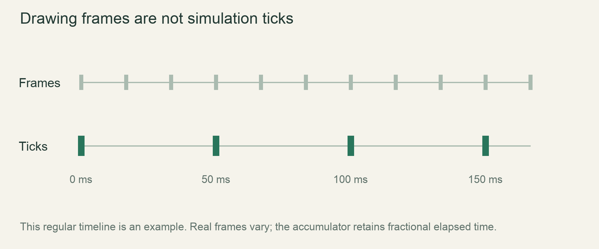

Start / First stepsLesson 14 of 100 · ~5 min reading + build time
Run movement on a 20 TPS clock
Schedule a simple 1x simulation update every 0.05 seconds independently of drawing frequency.
Previously: Borrow state to draw and reset. Keep that working result available before starting this lesson.
Why we need this now
If we add one row every rendered frame, a 120 FPS display runs movement four times as fast as a 30 FPS display. A simulation tick must therefore be scheduled from elapsed time, not counted redraws. We can derive the accumulator from the need to remember incomplete time between frames.
Your result: Schedule a simple 1x simulation update every 0.05 seconds independently of drawing frequency.

01Separate showing the state from changing it
The renderer may draw the same row several times between simulation updates. That is correct: drawing answers “what does the world look like now?” while a tick answers “what is the next world state?” At a baseline 20 ticks per second, the desired period is 1/20 second, or 0.05 seconds.
The target is not one tick every three frames. That ratio happens only when rendering is exactly 60 FPS. At a different display rate, the number of redraws per update changes while the intended real-time tick rate stays the same. Treat any frame-count shortcut as a deliberate broken experiment rather than production timing.
02Remember the unspent fraction
get_frame_time supplies elapsed seconds since the preceding frame in macroquad. Add it to an elapsed accumulator. Whenever elapsed is at least 0.05, perform a tick and subtract 0.05. Do not set elapsed to zero after every tick: that discards the leftover fraction and slows the simulation under ordinary frame variation.
For two frames of 0.03 seconds, the first leaves 0.03 and runs no tick. The second brings the total to 0.06; one tick spends 0.05 and leaves 0.01. This trace is the reason for an accumulator. No special clock vocabulary is needed until the unspent-time problem is clear.
03Handle more than one due update
Use while rather than if when enough time may have accumulated for multiple updates. This teaching example caps catch-up at two ticks per rendered frame, then discards excess whole periods while retaining the fractional remainder. The policy deliberately slows the demo after a large stall instead of producing an unbounded catch-up burst.
This is not the final production scheduler. It has no calendar counter, fast-forward multiplier, pause policy or measured per-frame time budget. The production chapter will introduce those choices explicitly. For now, a bounded accumulator is enough to learn why physics updates and display frames are different units of work.
04Verify with synthetic time before a live window
A timing bug is easier to test when elapsed durations are inputs instead of actual sleeps. The complete terminal experiment below feeds three fixed frame durations into the scheduling logic and prints tick count plus remainder. Predict the trace first. Then copy the same structure into the graphical loop using get_frame_time.
Keep the Cell outside the rendering loop and call the mutation helper only inside the due-tick body. Rendering remains outside that body so even frames with zero updates still display the latest state. A synchronous tick still consumes real CPU time; reducing TPS does not give permission for one tick to freeze rendering for 50 milliseconds.
Read → predict → run → change
Walk through the working example
Complete focused example — src/main.rs
Download this worked example ↧
fn main() {
let period = 0.05_f64;
let mut elapsed = 0.0_f64;
let mut total_ticks = 0;
for dt in [0.03, 0.03, 0.04] {
elapsed += dt;
let mut ticks_this_frame = 0;
while elapsed + 1e-12 >= period && ticks_this_frame < 2 {
total_ticks += 1;
elapsed = (elapsed - period).max(0.0);
ticks_this_frame += 1;
}
if elapsed >= period { elapsed %= period; }
println!("ticks={total_ticks}, remainder={elapsed:.3}");
}
}Read what each part does
- The example uses synthetic seconds so the clock can be traced deterministically.
- The decimal tolerance is fixture scaffolding, not a full production time representation.
- The final game’s exact calendar uses separate integer counters.
- The synthetic decimal fixture clamps the tiny tolerated subtraction residual to zero so its printed remainder is not negative zero; the production scheduler still requires its own exact policy.
Expected result
ticks=0, remainder=0.030
ticks=1, remainder=0.010
ticks=2, remainder=0.000. The tiny comparison tolerance is only for this decimal trace experiment.Exact version numbers, paths and compiler wording may differ. Compare the behavior and file locations, not incidental output formatting.
Try the idea here
This is a bounded teaching model in your browser, not your Rust game and not a real terminal. It never executes shell commands or modifies project files.
Prediction · repair · transfer
Exercises you actually do
Write a prediction or make an attempt before opening a solution. Use the hint if stuck; then compare reasoning and verify with the stated check. A different implementation is fine when it satisfies the same contract.
Predict zero-tick frames
Feed dt values 0.01,0.01,0.01,0.01,0.01.
Need a hint?
Each frame adds time even if no tick runs.
Worked solution
The first four frames perform no update; the fifth reaches one period. Use a careful floating comparison policy in a test fixture and avoid claiming arbitrary floating arithmetic is exact.
How to verify your result
The final simulated count is one tick with negligible residual error.
Remove the remainder
Replace subtraction with elapsed=0.0 and use two 0.03 frames repeatedly.
Need a hint?
Each reset loses 0.01 seconds in that pattern.
Worked solution
The broken version runs a tick every 0.06 seconds instead of preserving the target average. Restore subtraction so leftover time contributes to the next due update.
How to verify your result
You explain the slowdown as lost time rather than a GPU issue.
Integrate with a grain
Call fall_once only inside the due-update body and draw every frame.
Need a hint?
Update cadence and draw cadence are independent.
Worked solution
Declare cell and elapsed before the loop. Each frame collects elapsed time, executes due updates, clears/draws the current cell and yields. Do not recreate cell or put drawing only inside the while loop.
How to verify your result
The grain’s rate is not directly proportional to redraw count.
When it goes wrong
Start with the observed symptom. Change one assumption at a time instead of pasting fixes until the error disappears.
Fast monitors move the grain faster
What is happening: Movement still runs once per rendered frame.
Try this: Move the mutation into the elapsed-time due-tick loop.
The demo gets slower under common frame intervals
What is happening: Fractional time is discarded each tick.
Try this: Subtract the period rather than resetting the whole accumulator.
A long debugger pause causes a huge burst
What is happening: Catch-up work is unbounded.
Try this: Use the teaching cap/discard policy now and the later production budget policy when implementing fast-forward.
Explain it without the example
Two frames each add 0.03 seconds to an empty accumulator. How many ticks run and what remains?
Reasoning to compare
One 0.05-second tick runs and 0.01 seconds remains. Keeping that remainder prevents losing ordinary fractional time between frames.
Self-check only: test a prediction or ask your tutor if anything still feels arbitrary.
Finish with evidence
Ordinary rendering-rate changes do not define falling speed. After a debugger pause there is no endless catch-up burst.
Make one small variation without copying: predict it, run it and explain any difference. On another day, repeat one exercise from memory before starting the next lesson. Ask your tutor about any step you can execute but cannot explain.
This is an attempt marker, not a grade. Learning records are written only after demonstrated understanding.
Primary sources for this lesson
Use sources to verify the mechanism. The lesson itself supplies the instructions; the links are not a substitute for teaching them.